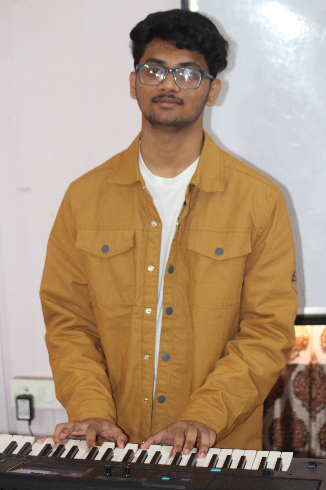

Ideas into worlds.
Worlds into things.
I’m Enoch — a computer science student who likes building unusual things: stories, mathematical systems, interfaces, programming experiments and digital worlds. I’m especially interested in AI/ML, creative technology, archaeology, history and storytelling.

A portfolio for the things I’m curious about.
I enjoy taking an idea and turning it into something tangible. Sometimes that means writing a fictional universe; sometimes it means inventing a mathematical method, designing a website, or experimenting with code. I like projects that sit somewhere between technology and creativity.
My main technical path is computer science with a focus on AI/ML, while archaeology and history remain major intellectual interests. Music and fiction writing are core creative outlets, especially composition, orchestration, worldbuilding and cinematic storytelling.
Build. Write. Experiment.
Where I’ve been — and where I’m going.
B.E. Computer Science & Engineering (AI/ML)
East Point College of Engineering. Currently pursuing an undergraduate engineering degree with a focus on Computer Science and Artificial Intelligence / Machine Learning.
Pre-University Education
CMR National PU College, ITPL.
12th Grade · 91.5%Secondary School
Kids Global High School — completed Grades 6 through 10.
10th Grade · 87.2%Primary School
Kids Global High School — completed Grades 1 through 5.
Early Childhood Education
Kids Global High School — completed LKG and UKG.
Let’s make something interesting.
Have an idea, collaboration, question or just something interesting to talk about? Send me a message.
Elsewhere on the internet.